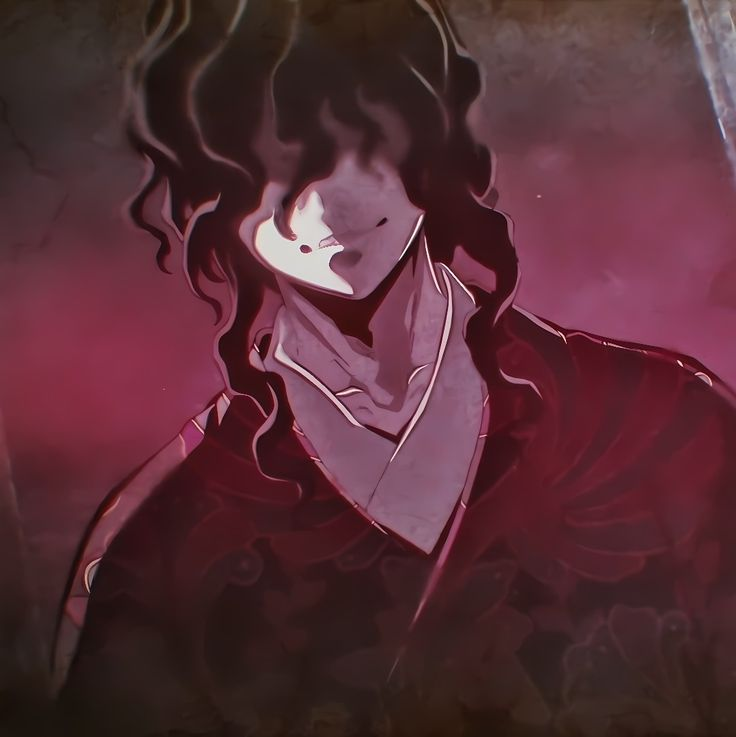
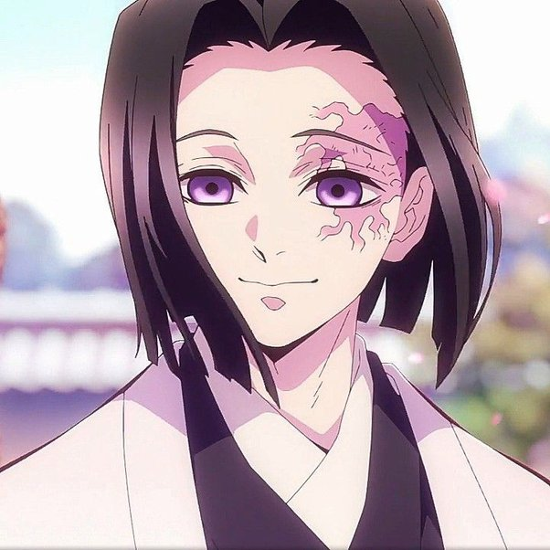

Mestres

No universo de "Kimetsu no Yaiba", dois personagens desempenham papéis fundamentais e opostos na batalha entre demônios e humanos:
Muzan Kibutsuji e Kagaya Ubuyashiki, com Muzan encarnando o mal absoluto e Kagaya simbolizando a esperança e a resistência da
humanidade.
Muzan

Origem e transformação -
Muzan Kibutsuji é o principal antagonista de "Kimetsu no Yaiba" e o primeiro demônio. Nascido na era Heian, há mais de mil anos, ele sofria de uma doença terminal. Desesperado para evitar a morte, Muzan se submeteu a um tratamento experimental usando a "Flor da Transformação Azul". O tratamento parecia ineficaz, e em sua frustração, Muzan matou o médico responsável. Pouco depois, ele percebeu que o tratamento funcionou, tornando-o imortal, mas vulnerável à luz do sol.
Ascensão ao poder -
Após sua transformação, Muzan começou a criar outros demônios, usando seu sangue para transformá-los. Ele se tornou o rei dos demônios, controlando seus seguidores através do medo e de suas habilidades únicas. Ele formou os Doze Kizuki, divididos em Luas Superiores e Inferiores, para ajudá-lo em seus objetivos.
Objetivo principal -
Muzan sempre buscou uma forma de superar sua fraqueza à luz do sol e alcançar a imortalidade absoluta. Ele procurava incessantemente pela "Flor da Transformação Azul" ou por uma alternativa que permitisse a ele andar à luz do dia sem ser destruído.
Conflito com os caçadores de -
Os Caçadores de Demônios, liderados pelos Hashiras, eram seus principais oponentes. Esta organização foi criada para combater a ameaça dos demônios e, especificamente, para destruir Muzan. Ele enfrentou vários caçadores ao longo dos séculos, sempre escapando devido à sua astúcia e poder.
Encontro com os Kamados -
Muzan atacou a família Kamado, matando quase todos e transformando Nezuko em um demônio. Tanjiro, o único sobrevivente, se uniu à Corporação dos Caçadores de Demônios, jurando vingar sua família e encontrar uma cura para Nezuko. Muzan se tornou o alvo principal de Tanjiro.
A batalha final -
A busca de Muzan pela imortalidade culminou em uma batalha climática contra os Caçadores de Demônios. Combinando suas forças, Tanjiro e seus aliados conseguiram enfraquecer e derrotar Muzan, destruindo-o e acabando com seu reinado de terror. A vitória dos caçadores marcou o fim de sua era de destruição.
Legado -
Muzan Kibutsuji deixou um legado de medo e destruição que durou séculos. Sua busca incessante por poder moldou o destino de inúmeros personagens e influenciou os eventos da série. Mesmo após sua derrota, o impacto de suas ações continuou a ser sentido pelo mundo e pelos sobreviventes.
Kagaya

Origem e liderança -
Kagaya Ubuyashiki é o 97º líder da Corporação dos Caçadores de Demônios e um descendente da família Ubuyashiki, que carrega uma maldição transmitida por Muzan Kibutsuji. Ele nasceu com uma condição que deteriora seu corpo e causa uma morte prematura. Apesar de sua frágil saúde, Kagaya se tornou um líder sábio e compassivo, orientando os Caçadores de Demônios com determinação e inteligência.
Relação com os hashiras -
Como líder, Kagaya mantém uma relação próxima com os Hashiras, os guerreiros mais fortes da corporação. Ele os inspira com sua sabedoria e serenidade, sendo respeitado e admirado por todos. Ele é visto como uma figura paterna e um estrategista brilhante, capaz de unir e motivar seus guerreiros contra os demônios.
A Maldição da família Ubuyashiki -
A maldição que afeta a família Ubuyashiki é uma consequência direta de sua ligação com Muzan. Cada membro da família sofre de uma doença degenerativa que enfraquece e deforma seus corpos, resultando em uma vida curta. Kagaya, apesar de sua condição debilitante, continua a liderar com coragem, determinado a acabar com Muzan e a maldição que assola sua família.
Contribuições na luta contra Muzan -
Kagaya é fundamental na estratégia para derrotar Muzan. Ele usa sua inteligência e habilidades táticas para coordenar os esforços dos Caçadores de Demônios. Mesmo enfrentando sua própria mortalidade, Kagaya não hesita em sacrificar tudo pelo bem da humanidade. Sua liderança é crucial na preparação para a batalha final contra Muzan.
Sacrifício e legado -
Durante a batalha final, Kagaya se sacrifica para enfraquecer Muzan, usando seu próprio corpo como uma armadilha para conter o rei dos demônios. Sua morte é um momento de grande impacto emocional para os Caçadores de Demônios, que se veem motivados a lutar com ainda mais fervor em sua memória.
Legado -
O legado de Kagaya Ubuyashiki é um de coragem, sabedoria e sacrifício. Sua liderança inspirou os Caçadores de Demônios a continuar lutando contra Muzan e os demônios, e seu sacrifício final foi um catalisador importante para a derrota de Muzan. Kagaya é lembrado como um líder altruísta que colocou o bem da humanidade acima de sua própria vida, deixando um impacto duradouro em todos que o seguiram.